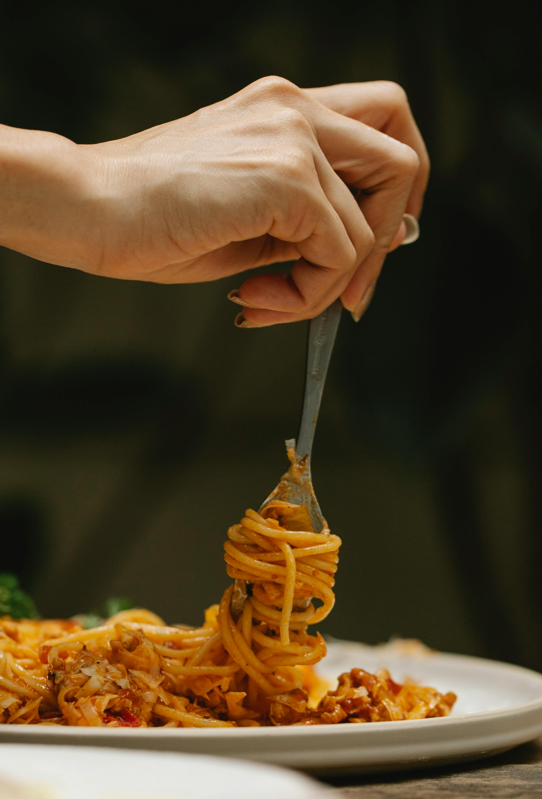

A mouth-watering homemade spaghetti bolognese
This recipe will teach you how to make this delicious and easy classic Italian dish. This pasta bolognese recipe is sure to become a family favourite.
Ingredients
- Olive oil (2 tbsp)
- Beef mince (400 g)
- One onion
- Two garlic cloves
- Tomato sauce
- Herbs and spices (mainly oregano, basil, salt, pepper)
- Spaghetti pasta
Steps
- Prepare your tomatoe sauce by adding your spices
- Smash your garlic cloves and chop your onion and add it to the sauce
- Add olive oil to your pan and startd cooking your meat
- When it gets slightly brown add your tomatoe sauce and stew it for around 20 minutes
- In the meantime prepare your pasta by boiling it
- After your meat and sauce are ready apply it to pasta
- Enjoy your meal!